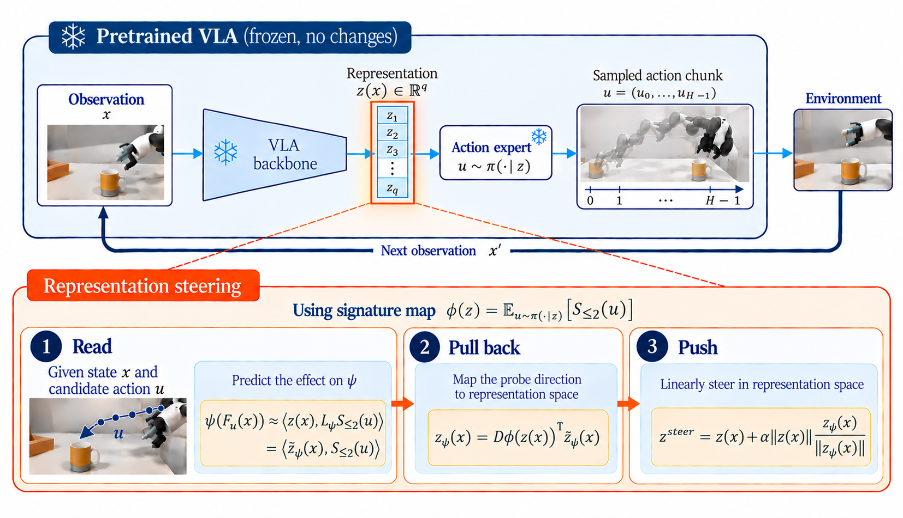

Representation Steeringfor Vision-Language-Action Policies
Redirect a robot by steering its internal representation. A probe reads what an action will do; the action head turns that insight into a direction.
Adapting to a change in intent
The policy is given the original instruction:
= “put the white mug on the left plate and put the yellow-and-white mug on the right plate”
Under this instruction, the policy starts with the white mug. Now the intent changes: move only the yellow-and-white mug to the right plate, leaving the white mug in place. We can (1) change the instruction, or (2) keep the original instruction and steer the policy's representation.
Using the already-fitted probe and the model's own action head, our method adapts to the new intent at inference time while keeping the policy weights and the original instruction unchanged.
Instruction changes and representation steering
The goal is to move only the yellow-and-white mug to the right plate, leaving the white mug in place. Compare the original instruction, two rewritten instructions, and steering with the original instruction.
Effect of steering strength
Same instruction and target, with α below the fixed strength. Rather than committing, the robot can switch between objects: it heads for one mug, turns to another, and sometimes knocks one over. Each example shows one failed run at each weaker strength, from different starts.
On the held-out starts, changing the instruction succeeds in –. Steering with the original instruction succeeds in –.
Success on held-out starts
Success: the yellow-and-white mug rests upright on the right plate, the white mug is never lifted and moves less than 3 cm, within 15 s. Fixed before the test run.
Success by steering strength
Outcome by steering strength (α = 16 moves the head input by 8% of its norm per re-plan). Weak pushes leave the learned habit in place, intermediate ones leave the policy undecided; only the strongest one redirects it reliably.
How this was set up, and its limits
- What we choose: the target quantity (distance of the end effector to a point above the yellow-and-white mug, at the height the demonstrations reach before grasping it), the strength α and the release rule (stop steering within 5 cm of that point, once the mug is lifted, or after 4.8 s). The direction itself comes from the probe and the model's own action head, recomputed at every re-plan; no simulator query, no new data, no training.
- Two runs. First: the height margin chosen on 12 development starts, several strengths tested on 13 other held-out starts. Confirmation: the strongest one (α = 56) fixed in advance, probes refit on the other half of the episodes, and 25 new held-out starts, each run once; the weaker strengths were run on the same starts afterwards. Everything on this page is from the confirmation run.
- The strengths used here are larger than the range in which the paper validates local steering (see the paper).
- After placing the yellow-and-white mug the policy stops: in its demonstrations, that scene is the end of the task. Moving the white mug next would need further steering.
- One model, one task. A policy that follows language more closely may respond to the new instruction.
Method
A probe reads, from the representation, what any candidate action chunk would do to a physical quantity ψ, here the distance of the end effector to a point above the yellow-and-white mug. Pulling that read-out back through the action head gives a direction in the representation; pushing along it steers the policy. No simulator query, no new data, no training.

The quantity ψ, the strength α and the release rule. The direction itself comes from the probe and the model's own action head.
Small pushes bias the robot towards the chosen quantity. Changing which object it goes for needs the larger, released pushes of the use case, beyond that validated range.
One model (OpenVLA-OFT), one LIBERO-10 task, the 32 leading principal directions of the action-head input.
Code
The experiments run as individual Colab cells. Outputs are saved in aclrh/ on Drive and read by subsequent steps. See README.md for the run order and PAPER_MAP.md for the scripts associated with each table and figure.
Running the code
Unzip code.zip in the Colab working directory. For example:
# once per runtime: unzip code.zip in the working directory
run = lambda p: exec(open(f"vla-lrh/{p}").read(),
{"__name__": "__main__"})
run("openvla_oft/02_collect_probe_data.py") # GPU
run("probing/q1_probe_extended.py") # CPUGPU steps load the model or simulator; CPU steps analyse saved results. Use an A100 GPU, or an L4 for steps 16 and 18. Environment setup takes 15–25 minutes in the first GPU cell. Long runs save checkpoints to Drive and resume when the cell is rerun.
Experiment scripts and run order
OpenVLA-OFT
| Step | Output | Runtime |
|---|---|---|
01 · 02 | Collect404 states × 32 candidate chunks | GPU |
03 · 05a | Probeprobing tables (OFT) | CPU |
04 · 05b · 05c | Steer one chunksteering table, 140 held-out states | GPU |
06 → 07 · 08 · 09 | Closed loop, figuresresponse curves, closed-loop paths | GPU / CPU |
SmolVLA
| Step | Output | Runtime |
|---|---|---|
s1 | Collect16 policy samples + 16 perturbations per state | GPU |
q1 | Probe both modelsQ1 table (needs 02 too) | CPU |
s2 | Steerfresh samples shared across strengths | GPU |
s3 · s4 | Analysesteering tables, reversal diagnosis | CPU |
Use case
| Step | Output | Runtime |
|---|---|---|
16 | Instruction vs. steeringα chosen on 12 starts, swept on 13 | GPU |
18 | Confirmα fixed, new probes, 25 new starts | GPU |
19 = 17 + 12 | Figure 2 and this pagefig_usecase, site | CPU |
Repository structure
Paths are relative to vla-lrh/.
| Directory | Steps | Contents |
|---|---|---|
openvla_oft/ | 01–09 | Probing, steering, and closed-loop experiments |
probing/ | q1 | Q1 probing table for both models |
smolvla/ | s1–s4 | Stochastic policy experiments |
use_case/ | 16–18 | Figure 2 and the use case |
site/ | 12, 19 | Project page |
colab/ | — | One cell per step |
tools/ | — | Anonymity check |
Paper results and scripts
| Q1 probing table, both models | q1 |
| OpenVLA-OFT steering table | 04 · 05b · 05c |
| Response curves | 08 |
| Closed-loop figure | 06 → 07 · 09 |
| SmolVLA steering tables | s2 → s3 · s4 |
| Figure 2 and the use case above | 16 · 18 → 17 |
The complete mapping, using the labels in the paper, is in PAPER_MAP.md.
Experimental settings
- OpenVLA-OFT fine-tuned on LIBERO-10, chunks of 8 actions; one LIBERO-10 task, all 50 layouts.
- z(x): the 32 leading principal directions of the action-head input, fitted on training episodes only.
- Held-out episodes everywhere: folds by episode (even / odd for steering), seed 0.
- One unit of α moves the head input by 0.5% of its norm; finite-difference step 0.25 (standardized units).
- Use-case success: the yellow-and-white mug upright on the right plate, the white mug never lifted and moved less than 3 cm, within 15 s; fixed before the runs.